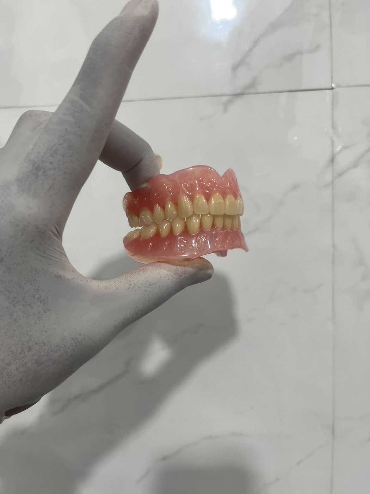
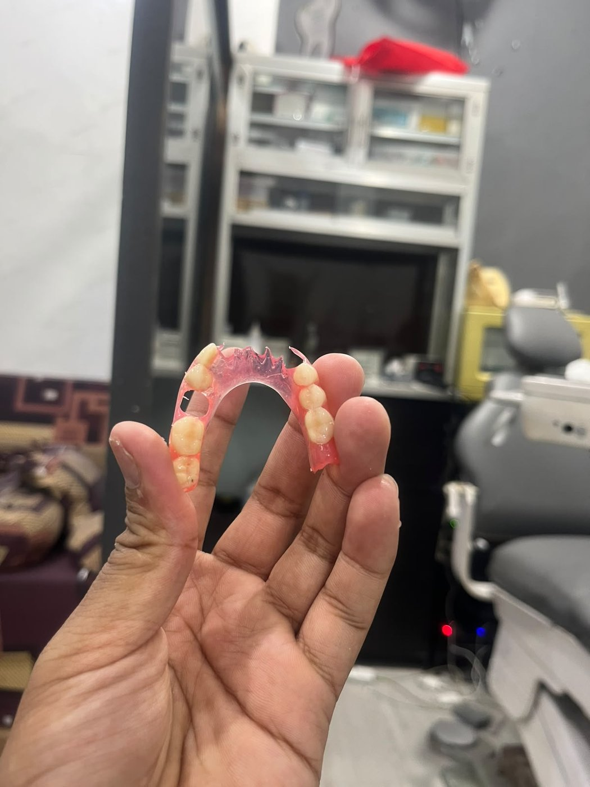
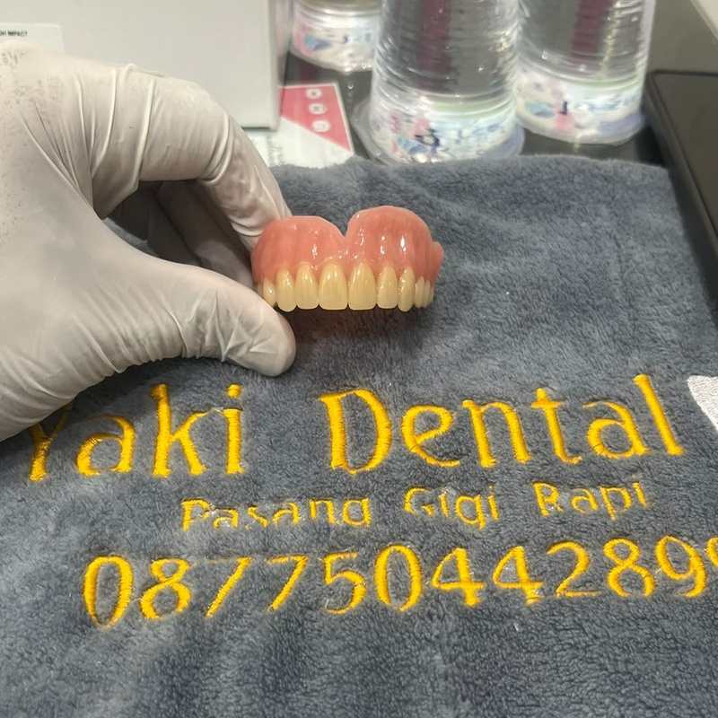
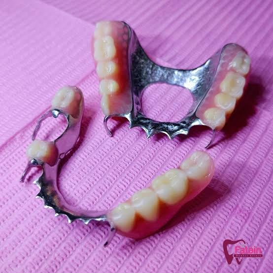
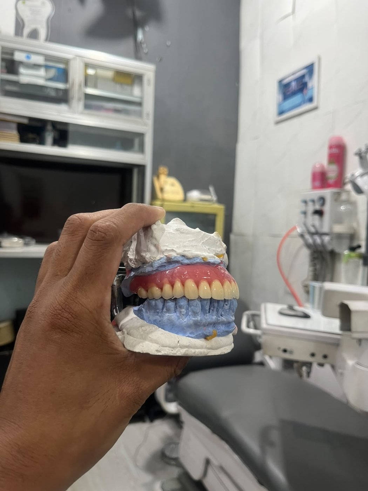

Bukti nyata transformasi senyum alami pasien Yaki Dental. Lihat perubahan luar biasa sebelum dan sesudah pemasangan gigi tiruan presisi berkualitas tinggi.
Pasien kehilangan sejumlah gigi depan atas. Dibuatkan gigi tiruan sebagian akrilik dengan klamer kawat presisi, mengembalikan fungsi bicara dan estetika senyum.
Pasien kehilangan gigi seri tengah atas. Dibuatkan gigi tiruan presisi dengan pemilihan warna shade yang menyatu sempurna dengan gigi asli di sebelahnya.
Pasien mengalami keausan berat dan fraktur pada 4 gigi depan atas. Direstorasi dengan gigi tiruan estetis, senyum tampak jauh lebih muda, rapi, dan simetris.
Pasien memiliki celah renggang lebar pada gigi depan atas. Dibuatkan gigi tiruan fleksibel tanpa kawat yang tampak dari luar, menutup celah secara alami dan nyaman digunakan.
Pasien kehilangan gigi taring dan premolar rahang atas. Dibuatkan gigi tiruan Valplast fleksibel tanpa kawat logam, cengkeraman lentur sewarna gusi menyatu natural.
Pasien kehilangan 2 gigi seri tengah atas. Dibuatkan gigi tiruan akrilik dengan kawat retensi halus di sisi belakang, senyum kembali rapi, rapat, dan percaya diri.
Restorasi gigi anterior samping dengan pemilihan warna shade yang disesuaikan presisi mengikuti warna alami gigi asli pasien, tidak terlihat belang dan sangat rapi.
Pasien kehilangan gigi geraham belakang rahang bawah kanan & kiri. Dibuatkan gigi tiruan sebagian akrilik untuk mengembalikan fungsi kunyah dan menjaga bentuk wajah tetap proporsional.
Pasien mengalami kehilangan gigi seri depan dan taring atas. Dibuatkan gigi tiruan sebagian akrilik dengan adaptasi basis yang rapat, warna shade alami menyatu dengan gigi asli, serta kenyamanan kunyah maksimal.
Pasien kehilangan 4 gigi seri depan rahang atas. Dibuatkan gigi tiruan presisi berbahan Bioton Rigix yang kuat, kaku (rigid), dan tahan benturan dengan retensi presisi tanpa kawat tampak di bagian depan.
Dokumentasi resmi Yaki Dental untuk restorasi gigi depan rahang atas yang hilang dan aus. Hasil pemasangan presisi, warna putih bersih cemerlang, kontur gusi harmonis, dan mengembalikan kepercayaan diri tersenyum.
Pasien mengalami kehilangan gigi seri depan rahang atas yang cukup lebar. Dibuatkan gigi tiruan sebagian akrilik dengan klamer presisi, warna shade selaras alami dengan gigi bawah, mengembalikan fungsi bicara dan estetika senyum secara instan.
Pasien lansia wanita mengalami ompong total pada seluruh rahang atas (edentulous). Dibuatkan plat gigi tiruan penuh akrilik dengan plat palatum anatomis berdaya hisap tinggi, stabil, nyaman saat mengunyah dan berbicara.
Pasien pria hanya memiliki 1 gigi seri tengah asli di rahang atas, seluruh gigi lainnya telah tanggal. Dibuatkan gigi tiruan sebagian akrilik yang mengelilingi dan melindungi gigi asli yang tersisa dengan oklusi kunyah kokoh.
Pasien pria lansia dengan kondisi rahang atas ompong total tanpa gigi. Dibuatkan gigi tiruan lengkap akrilik presisi tinggi, adaptasi tepi rahang nyaman tanpa melukai gusi, mengembalikan tawa dan rasa percaya diri.
Kehilangan gigi yang lama menyebabkan bibir dan pipi tampak kempot serta garis wajah turun. Pemasangan gigi tiruan lengkap mengembalikan kepenuhan bibir, proporsi wajah tampak jauh lebih muda, dan senyum kembali ceria.
Pasien mengalami kehilangan 2 gigi seri depan utama atas yang mengganggu penampilan dan artikulasi suara. Dibuatkan gigi tiruan presisi dengan pemilihan bentuk dan shade warna yang menyatu sempurna dengan gigi alami di sampingnya.
Pasien mengalami kehilangan 1 gigi seri depan utama atas yang menyebabkan celah nyata saat tersenyum. Dibuatkan gigi tiruan lepasan akrilik dengan kustomisasi shade warna kekuningan alami yang menyatu harmonis dengan gigi asli di sebelahnya tanpa terlihat kontras.
Restorasi estetik kehilangan 1 gigi seri depan rahang atas pada pasien wanita. Dibuatkan elemen gigi anterior beranatomi presisi dan shade putih bersih alami, mengembalikan simetri garis senyum, rasa percaya diri tinggi, dan kenyamanan bicara.
Kasus kehilangan beberapa gigi anterior sekaligus (gigi seri dan taring) pada rahang atas kanan. Dibuatkan Gigi Tiruan Sebagian Lepasan (GTSL) akrilik dengan klamer kawat retensi presisi yang mengunci mantap, menutup seluruh celah secara rapi dan kokoh.
Pasien lansia mengalami kehilangan seluruh gigi rahang atas (edentulous penuh). Dibuatkan Gigi Tiruan Lengkap akrilik dengan plat langit-langit berdaya hisap (suction) maksimal, stabil tidak mudah lepas, serta mengembalikan susunan senyum dan fungsi kunyah secara prima.
Pasien usia muda kehilangan 1 gigi seri depan utama atas yang menimbulkan celah ompong mencolok. Dibuatkan gigi tiruan lepasan akrilik presisi dengan warna enamel dan kontur anatomi yang menyatu identik dengan gigi seri sebelahnya.

Set gigi tiruan lengkap rahang atas dan bawah berbahan akrilik premium dengan plat langit-langit transparan anatomis untuk daya hisap (retensi) maksimal, stabil, dan nyaman.

Gigi tiruan fleksibel nilon termoplastik Valplast original dengan basis tipis, elastis, dan tanpa kawat logam yang terlihat sehingga estetika sangat terjamin dan tidak melukai gusi.

Plat gigi tiruan rahang atas berbahan High Impact resin dengan polesan halus, mengkilap, dan higienis. Dilengkapi bordir identitas resmi Yaki Dental Pasang Gigi Rapi.

Desain kerangka logam tipis dengan sandaran oklusal dan klamer presisi. Beban kunyah disalurkan langsung ke gigi penyangga dan tulang, tidak menekan gusi secara berlebihan.

Penyusunan gigi tiruan di atas model kerja gipsum dengan artikulator presisi untuk memastikan oklusi gigitan anatomis yang seimbang, tidak mengganjal, dan nyaman.
Diskusikan kebutuhan pembuatan dan perbaikan gigi tiruan Anda secara langsung bersama spesialis berpengalaman Yaki Dental.
chat Konsultasi Bebas Biaya via WhatsApp north_east